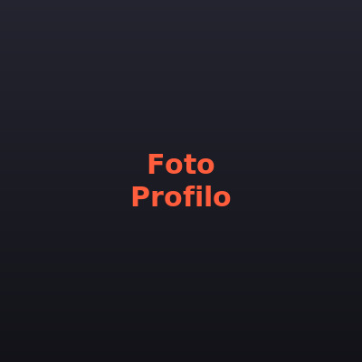

Marianna Cecchelli
Visual Designer & Full-Stack Developer
Profilo
Full-Stack Developer con background in Visual Design, attualmente impegnata come freelance nello sviluppo e nella manutenzione di applicazioni web in contesti industriali ad alto standard qualitativo.
Costruisco interfacce pulite e performanti mentre gestisco logica server-side e ottimizzazione del codice — unendo la solidità tecnica del percorso a 42 Firenze con la sensibilità visiva maturata allo IED. Il mio obiettivo è portare valore in team che sviluppano prodotti reali, scrivendo codice pulito, scalabile e ben documentato.
Formazione
- 42 Firenze Novembre 2024 – in corso · Firenze, Italia
- IED — Istituto Europeo di Design, Firenze Diploma Accademico di Primo Livello in Design della comunicazione, indirizzo Comunicazione pubblicitaria (2021 – 2024) · 110/110
- Liceo Classico Giosuè Carducci — Volterra Diploma di scuola superiore (2016 – 2021) · 88/100
Lingue
Italiano (madrelingua) — Inglese (C1) — Francese (B1)
Cosa so fare
Linguaggi
Frontend
Backend
Networking & Protocolli
Algoritmi & Strutture Dati
Tools & Design
Principali esperienze
ITRAD — Sviluppatore Web Freelance
Apr 2026 – presente · Web Development
Sviluppo e manutenzione di applicazioni web in ambiente industriale aerospace & defense.
- Interfacce responsive e ottimizzate
- Flussi HTTP/REST e integrazione con servizi backend
- Workflow Git: branch, PR, code review
ITRAD — Visual Designer Freelance
Feb 2026 – Apr 2026 · Brand Identity
Rebranding completo della brand identity aziendale.
- Logo e sistema tipografico
- Palette colori e tone of voice
- Brand guidelines
Freelance — Digital & Web Projects
Ott 2022 – Apr 2024 · WordPress · Digital Strategy
Web developer e digital strategist per brand locali.
- Siti WordPress: hosting, performance, temi e plugin
- UX design e content management (editoriale, e-commerce)
- Clienti: EdV — A Garden with a View, DiLeonardo, marketing territoriale